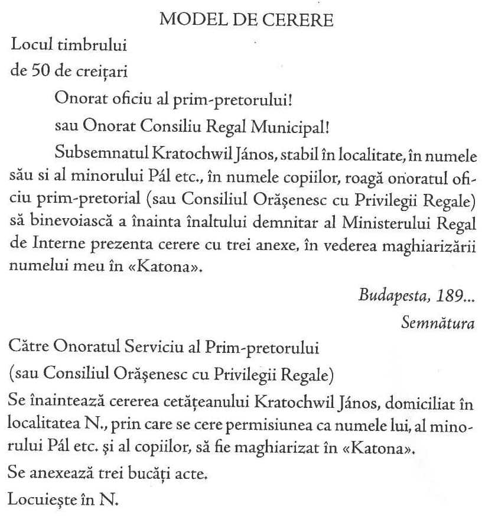
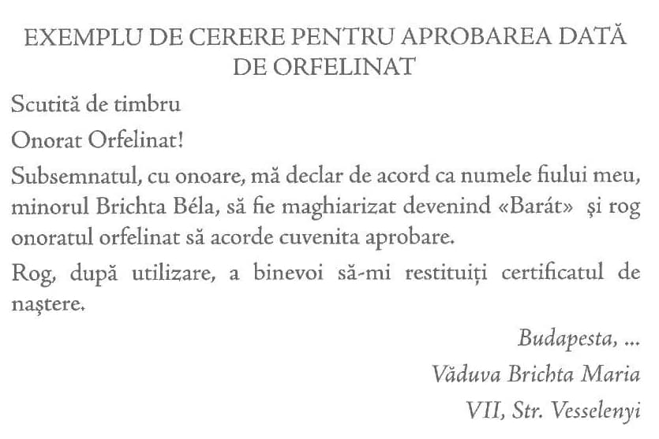
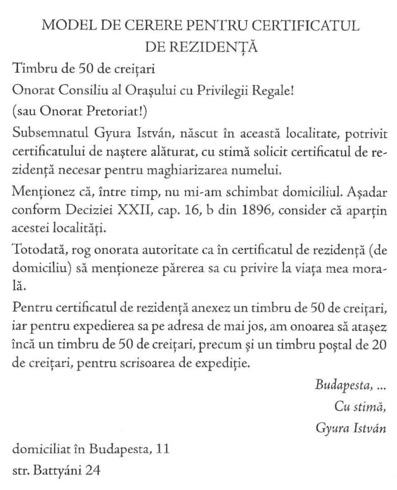
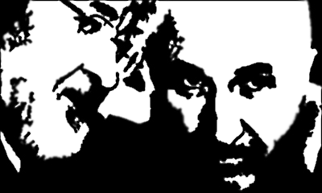

Așa cum, prin botez, creștinul devine membru al comunității creștine, tot așa, prin maghiarizarea numelui de familie, prin botez național, cel cu nume străin este primit în societatea maghiară, în rândurile adevăraților fii ai națiunii. Acest botez, acest crez este, din punctul de vedere social și național, mult mai important decât botezul religios, care nu dă decât un prenume și aduce adepți numai religiei, pe când maghiarizarea numelui de familie îl face maghiar și astfel ne mărește încrederea reciprocă și ne face egali întraolaltă, maghiarizarea numelui având, prin urmare, un mare rol etic în consolidarea și unificarea națiunii noastre.
S-ar putea spune că numele maghiar reprezintă crezul politic. Sentimentele maghiare ale celui ce poartă nume unguresc nu pot fi puse la îndoială, deoarece, dacă cineva nu vrea să fie maghiar, află destule modalități ca să-și schimbe numele.
Mulți spun: Numele nu contează, sunt mai bun ungur cu numele meu străin decât alții! Ei flecăresc și noi trebuie să-i credem pe cuvânt. Dar de ce nu o demonstrează deschis, de ce nu o dovedesc prin fapte? De ce ne scot ochii afirmând că tatăl și bunicul lor și-au purtat numele cu demnitate? Oricum, ei au fost nemți, slovaci etc. și s-au mulțumit cu starea și cu numele lor.
Cu totul alta este situația noii generații, ce se declară cu mândrie maghiară, și totuși își mai păstrează numele cu care strămoșul slovac sau german s-a fălit, respingând bănuiala de a trece drept maghiar. Această generație ar trebui să renunțe la tradiția conservatoare, să nu se lase urmărită de limitata prejudecată feudală și să se ridice la înălțimea la care numai geniul național se poate ridica, adică să rupă cu obiceiurile învechite și să nu se preocupe de prejudecăți, demonstrând elocvent sentimentele maghiare.
Nu numai noblețea, ci și numele obligă. Cel ce poartă nume maghiar nu-și repudiază niciodată sentimentele maghiare și nici nu-și minimalizează obligațiile față de națiune și patrie, nu contează că este maghiar, deoarece numele său l-ar dezminți.
Maghiarizarea numelui este un jurământ de credință, o angajare patriotică. Maghiarizarea numelui întâmpină două principale dificultăți: tradiția și prejudecățile. Cu prima putem termina repede, întrucât ruperea verigilor naționale nu produce decât neplăceri neînsemnate și, față de gravitatea problemei, nu poate fi luată în seamă. Cu prejudecățile însă avem de dus lupte mai grele decât cu comodele obiceiuri burgheze. Prejudecățile, de obicei, sunt adânc înrădăcinate în cercurile conservatoare ale nobililor, care își păzesc cu strășnicie numele aristocratic.
Unii dintre aceștia își descarcă mânia prin izbucniri necontrolate, când, întâmplător, un cetățean de origine obscură îndrăznește să-și ia un nume cu rezonanță similară. În schimb, uită că orice cetățean poate să-și câștige o faimă, dând strălucire și glorie numelui său. Așadar, nimic nu-l poate împiedica pe omul de rând să-și obțină doritul nume. În acest chip nu încearcă a încuraja pe nimeni spre a-și alege nume vestite, dar socotim că văicărelile pe această temă sunt lipsite de demnitate.
Unii domni, temându-se să nu se compromită numele istorice prin maghiarizare, devin pur și simplu prăpăstioși. De pildă, se jură că ar fi citit în ziare o știre despre arestarea de către poliție la Szigetvár, a hoțului de buzunare Zrinyi Miklós. E posibil ca ziarele să fi transmis o astfel de știre polițistă. S-ar putea întâmpla să fie o glumă de prost gust, dar regele ridică statuie eroului de la Szigetvár, ceea ce dovedește clar că știrea polițistă nu a vătămat cu nimic memoria numelui glorios.
Ar fi păcat să ne împiedicăm în astfel de nimicuri. În ultimul timp, ori de câte ori am citit nume istorice (nemaghiarizate) în dosarele tribunalelor, le-am trecut pe ordinea de zi fără ezitare, deoarece și purtătorii acestor nume istorice sunt oameni ca toți oamenii. Falsele motive nu vor bloca – și în această privință suntem absolut liniștiți – avântul liber luat de procesul maghiarizării numelui.
Așa cum numele ne ajută să ne deosebim unii de alții, tot așa el trădează naționalitatea. Aici însă se află punctul nevralgic al Ungurilor. În literatura, știința și arta noastră unele nume de vază au rezonanță străină și deseori nu sunt considerate ca maghiare, ceea ce reprezintă o însemnată pierdere de prestigiu al culturii noastre în străinătate. Din acest motiv străinătatea ia cunoștință de noi atât de greu și atât de lent. Cu câțiva ani în urmă, presa și opinia publică au primit cu mare bucurie și au felicitat ideea maghiarizării numelor, fără să caute pricină și să se neliniștească de viitorul și consecințele acestei acțiuni. Astăzi, când mare parte de nume au fost maghiarizate, când campania a luat un avânt apreciabil, apar falșii profeți, care se vaită frângându-și mâinile: Ce-o să iasă din toată harababura asta? Ce se va alege din numele Zrinyi, Hunyadi? Ca și cum aceste nume ar avea nevoie să fie apărate.
Bizuindu-ne pe sentimentul național maghiar, recunoscut la timp de cel mai șovin împărat din Occident, credem că cei șovăielnici și de rea credință se vor convinge că maghiarizarea numelui va realiza o consolidare unică și monolită a societății maghiare, în locul actualei societăți pestrițe.

Alegerea noului nume trebuie să corespundă celui mai rafinat gust lingvistic: să fie impecabil maghiar și să nu lezeze interesele nimănui. Noul nume să fie scurt, cu sonoritate plăcută, ungurească, frumos și lesne de pronunțat chiar și pentru un străin. Se vor evita numele strălucite și de rezonanță istorică, în toate cazurile posibile. Numele nou să fie ușor de recunoscut de orișicine și, de la prima rostire, să se vadă că este unguresc. Numele aiurite, care nu înseamnă nici lae, nici bălaie, să fie evitate. Pen¬tru a înlătura confuziile, nu se recomandă frecventele nume maghiare, ca: Kis (Micu), Nagy (Mare), Fehér (Albu), Fekete (Negru), Kovács (Fieraru), Molnár (Moraru), Szabór (Croitoru), Varga (Cismaru) etc., precum și numele de botez lesne de tradus și de schimbat. În ultimă analiză, fiecare face cum îl taie capul, dar dacă ține să ia nume vechi, să cumpănească mult, pentru a nu cășuna necazuri familiarilor în viață. Dealtfel, bunul simț impune, de pildă, să nu fie adoptate nume ca Batthyány, Hunyadi, Rákóczi, Széchenyi etc., nici nume de națiuni, nici nume nobiliare, ca Bánfi, Vajdafi, Abaffi, Ostaffi etc. Mulți cred că un y la coada unui nume poartă o semnificație nobiliară, dar se înșeală, deoarece acesta poate să arate doar că avem de-a face cu un nume mai vechi. De altfel, nobilimea din județele din partea Ardealului socotește corectă scrierea numelui cu i. Cei care doresc să-și maghiarizeze numele recurgând la scrierea de modă veche dau dovadă de imaginație bolnăvicioasă. La alegerea noului nume recomandăm să se țină seama de următoarele elemente:
Nu intenționăm epuizarea modalităților corecte de maghiarizare a numelui. Am dorit doar să le amintim pe cele mai importante și mai potrivite, recomandându-le spre a fi urmate. Gustul personal fiind variabil, nu este lesne s-o nimerești la alegerea numelui. Nevoie ar fi de demarcat hotarul păstrării onorabile a numelor vechi. Aici hotărăște îndeosebi bunul simț. Cel ce dorește să ia un nume nou, face bine dacă cere părerea unei persoane de specialitate.


Procesul de maghiarizare a numelor în țara noastră este vechi. După eminentul nostru istoric Jakab Elek, sub regele Matei, un mare număr de ostași de naționalitate maghiară și-au maghiarizat numele, numai pentru a-și dovedi credința față de rege și atașamentul față de Unguri. În acest fel, o mulțime de persoane cu sonore nume străine, cu cetățenie maghiară, au ținut să dovedească în mod indubitabil, prin schimbarea numelui, atașamentul lor la națiunea maghiară, Bart (Barbă) devenind Szakál, Kürschner (Blănaru) Szücs, Tischler (Tâmplaru) Asztalos, Kannengiesser (Olaru) Kannagyártó, Weber (țesătoru) Takács, Salzer (Săratu) Soós, Weiss (Albu) Feher, Schwartz (Negru) Fekete, Raw-Ravius (Flocosu) Szñorños, Goldschmidt (Auriu) Aranyos, Kraus (Dantelat) Fodor, Sattler (Stelaru) Nyerges, Scherer (Frizeru) Nyiró, Kauffmann (Comerciantu) Kalmar.
Numele de botez dăinuie de la începuturile creștinismului până în prima partea secolului al XIII-lea. În patria noastră, ca și în alte părți, societatea bogată și distinsă își lua numele după cetăți și moșii. Cetățenii și iobagii au început să folosească numele în mod deliberat abia pe la începutul secolului al XVI-lea. În secolul al XVI-lea, în scopul de a menține evidența populației, statele au impus în mod obligatoriu însușirea unui nume de familie. Dar, înainte de a se fi petrecut aceasta, societatea însăși i-a scos în relief pe cei mai distinși reprezentanți ai săi, prin adăugarea sufixului fy (al lui) la numele tatălui. Prin această particulă, au apărut la noi nume ca Geröfy, Pálfy, Péterfy. Același efect se obține la neamurile slave prin adăugarea lui its și vits, cu valoarea lui fy sau cu același înțeles; la neamurile germane, la sași, prin sohn, son, sen; la națiunile latine prin i, la spanioli și la normanzi prin ez și fitz, iar la irlandezi și scoțieni prin Mac și O. Adăugate la numele tatălui, particulele respective arată originea.
În patria noastră, folosirea numelui de familie a devenit obligatorie în secolul al XVI-lea, după cum rezultă din registrele județelor. Prima constrângere în acest sens a săvârșit-o împăratul Iosif al II-lea împotriva Evreilor care țineau cu fanatism la tradițiile lor și nu se hotărau să părăsească obiceiul a adăuga particula ben la numele tatălui. Prin decizia nr. 10.426 din 23 iulie 1787, s-a dispus ca, fără nici o excepție, fiecare evreu să-și ia un nume german și să-l poarte neschimbat toată viața.
În această decizie, par.1 sună astfel: Evreii în toate provinciile trebuie să ia act de faptul că, începând cu 1 ianuarie 1788, sunt obligați să poarte nume de familie, tatăl de familie pentru familia sa, tutorele pentru orfanii săi, celibatarul pentru sine, deoarece nu se află nici sub ocrotirea tatălui, nici a tutorelui, nici în curatelă. Femeile necăsătorite vor primi numele de familie al tatălui, iar cele căsătorite al soțului. Fiecare persoană, fără deosebire, trebuie să-și ia un nume german, pe care nu-l va părăsi toată viața.
Peste tot și în toate epocile s-a practicat, în patria noastră, schimbarea de nume. Multe familii îmbogățite și-au luat numele după moșia lor. Alții și-au luat nume slovace sau nemțești după denumirea moșiilor lor, iar cei mai mulți și-au modelat numele după pronunțarea populară. (Așa a făcut, de pildă, o ramură a familiei Rudnay din județul Nyitra, care s-a stabilit în județul Trencsén, devenind Rudnyánsky).
Împăratul Francisc, înțelegând însemnătatea evidenței numelui în domeniul instrucțiunii publice, al impozitului și al poliției, a chemat în audiență, în anul 1814, pe cancelarul Curții și i-a cerut să raporteze dacă există, iar dacă nu, să se efectueze neîntârziat această evidență a populației.
Primul ordin al împăratului Francisc, din 13 noiembrie 1814, referitor la reglementarea maghiarizării numelui, prevede cu strășnicie ca schimbarea numelui să nu poată fi făcută fără aprobarea autorităților locale și numai în baza unor motive bine întemeiate, ignorarea prezentei hotărâri atrăgând pedeapsa ce se aplică celor ce încalcă ordinele superioare și dispozițiile publice legale. Cu toate acestea, schimbări de nume fără autorizație s-au produs, după cum rezultă din scrisoarea redactată cu propria mână de împăratul Francisc, la 13 aprilie 1815: Dragă Conte Erdödy! La 8 octombrie anul trecut am semnat o ordonanță referitoare la schimbarea abuzivă a numelui în Ungaria. Văd totuși că situația se perpetuează și repet recomandarea mea către cancelaria aulică a Ungariei, pentru a se lua măsurile necesare și a se pune capăt acestui abuz, aplicându-se măsuri legale împotriva celor ce încalcă ordinele mele. Veți da un raport amănunțit asupra măsurilor luate. Viena, 13 aprilie 1815. Franz, m.p.
La evidența angajaților, s-a dispus, în temeiul ordonanței, ca Andorth, mare angrosist, domiciliat în această localitate, să-și schimbe numele în Andor; ca Demeter, însărcinat cu evidența, de asemenea domiciliat în această localitate, să devină Dömötör; ca Linczenpolcz, furnizorul Curții, să devină Nyilassy; ca Hollober, expeditorul Curții, să fie Hollóbér, ca Hink să devină Hinká, ca Hoffmann, lăcătuș din Pozsonyi și paznic al palatului, să se numească Hoffmányi, ca Seemann, furnizor al Curții, să fie Zemány, ca Paidl Marchegg să se transforme în Paydly, ca Buzády, cantaragiul sării din Mohács, să devină Buzádfy și König, șeful serviciului de sare din Pozsony, să se scrie Király.
Pentru reglementarea schimbării numelui (adică pentru împiedicarea abuzurilor) s-au emis mai multe ordonanțe, care se păstrează în arhivele statului. Astfel, ordinele din 1815 și 1817, referitoare la greco-catolici, prevăd că sufixele its și vits se pot păstra, cu condiția de a fi folosite în permanență. Spre a se împiedica maghiarizarea arbitrară a numelor germane, s-a emis un ordin circular la 9 mai 1815, cu efect retroactiv, către toate autoritățile, prin care se interzice nu numai schimbarea, ci și modificarea numelui prin adăugarea sau scoaterea unor părți de cuvânt, litere, silabe sau semne.
Primele maghiarizări masive ale numelor de familie au avut loc din martie până la finele lunii decembrie 1848 și de la 1 iunie 1849 până la sfârșitul războiului de eliberare. În prima perioadă și-au maghiarizat numele 526 persoane majore, iar în perioada a doua, un număr de 148 de persoane majore.
Guvernul absolutist, prin ordinul nr.3366 din 1849, s-a grăbit să anuleze legea maghiarizării numelor, dând dispoziții ca cetățenii să-și reia vechile lor nume. Ordinul care a pus în ilegalitate schimbările de nume, dar nu a interzis posibilitatea schimbării lor în viitor, are următorul aspect:
Comunicatul nr. 43
Către guvernatorii civili și militari ai Împăratului și Regelui, referitor la schimbările de nume făcute cu aprobarea Ministerului de Interne Maghiar de la 15 decembrie 1849.
În cursul anilor trecuți și în anul curent s-au săvârșit frecvente schimbări de nume, fără ca, pentru aceasta, să fi apărut o aprobare legală anterioară. S-au înre¬gistrat cazuri când unele persoane au fost obligate, contrar voinței lor, să-și schimbe numele.
Pentru ca această chestiune maghiară să se reglementeze, evitându-se încurcăturile în raporturile familiare, pentru asigurarea proprietății particulare, pentru a se acorda posibilitatea celor interesați de a scăpa de abuzurile la care au fost supuși conform ordonanței emise, în acord cu Ministerul Imperial și Regal de Interne, se ordonă, în vederea aplicării în marele Imperiu, următoarele:
Se declară nule și neavenite directivele date de Ministerul maghiar dizolvat, cu privire la schimbările de nume făcute fără aprobare superioară. Autoritățile sunt obligate ca, în actele oficiale, să treacă în scris adevăratul nume de familie al persoanelor în cauză.
De aici înainte, pentru aprobarea schimbării numelui, se va face o cerere prin autoritățile de Stat către Ministerul de Interne Împărătesc și Regal. Se vor înainta aceleași acte doveditoare care au fost necesare potrivit ordinelor anterioare.
Wohlgemuth,
General adjunct
Din motive lesne de înțeles, potrivit obiceiului, unii au reluat și folosesc parțial până în prezent vechiul lor nume originar. Cei mai mulți, în schimb, încălcând ordinul, și-au menținut, adică și-au reluat numele maghiarizat, și trăiesc cu el până azi. Ca să se pună capăt acestei inconstanțe, după restabilirea drepturilor noastre constituționale, Comitetul central al Societății de maghiarizare a numelui s-a adresat Ministerului Regal de Interne, spre a lămuri dacă decizia anterioară, cu privire la maghiarizarea numelui, își mai păstrează valabilitatea. La care, Alteța Sa Ministrul de Interne, prin ordinul nr. 105.265 din 11 noiembrie 1897, a aprobat în principiu valabilitatea maghiarizării numelor din anii 1848 / 1849, însă, de la caz la caz, partea interesată trebuie să formuleze o nouă cerere.
Răspândirea maghiarizării numelui n-a putut fi oprită prin ordonanța din 15 decembrie 1849, dată de către guvernatorii civili și militari ai Împărăției și Regatului și, în 1850, împuternicitul împărătesc și delegatul civil, prin ordinul 3724/G, articolul a, constrânge la respectarea dispozițiilor anterioare și, în acest scop, emite un nou ordin către autoritățile judiciare ale țării, cu următorul conținut:
Înțelegând că numărul cererilor de schimbare a numelui de familie, chiar fără vreo justificare sau un temei bine determinat, crește din zi în zi, și ținând seama de legea nr. 2905 / G din 27 noiembrie anul anterior, sunt nevoit ca, de acum înainte, să pretind ca cererile de schimbarea numelor patronimice – pe cale de verificare de către autoritățile politice competente – să conțină răspuns la următoarele probleme: Dacă petiționarul este de origine nobiliară și dacă există vreo familie care mai poartă același nume și, în caz afirmativ, dacă are de obiectat ceva. Dacă schimbarea numelui are o justificare temeinică. Toate cererile care nu îndeplinesc aceste condiții se vor respinge neîntârziat.
Drept urmare acestui ordin, din 1853 până la sfârșitul anului 1859, s-au făcut numai nouă schimbări de nume și patru maghiarizări. În 1854, jandarmul Weisz Márton, domiciliat în Buda, și-a maghiarizat numele în Fejér (Albu); în 1857, pietrarul Goldberger Ferencz din Pesta și-a maghiarizat numele în Hagyei (Munteanu); Oppenheim Alajos, gestionar de magazin din Pesta, domiciliat în Buda, devine Oppodi; în 1858, și Guttmann Mihály, funcționar la primăria din Kassa își schimbă numele în Bányai. În 1851, Helley Ferencz, cu domiciliul în Pozsonyi, și-a schimbat numele din maghiară în germană, devenind Helly, și tot atunci Szarvassy Frigyes, domiciliat în Pesta, a devenit Gans. În 1855, Boskovits Leó, negustor în Pesta, a devenit Bunger; în 1856, Graf Simon, domiciliat în Pesta, mutat la Buda, s-a transformat în Stern; în 1854, Negyelszki Lórincz din Sopron, maior pensionar, și-a schimbat numele în Niedzielsky; în 1853, contele Pálffy Ferencz, funcționar la Ministerul de Interne, și-a luat numele de Lipót Daun-Pálffy; în 1854, Pfeffersamen Aron, calfă de neguțător din Pesta, a devenit Pfeffermann; în 1858, Ribaud Francziska din Pozsonyi a devenit Flette și tot atunci soldatul Schwartz Márkus din Kassa a devenit Tolvetzky. Amintim totodată că, în 1860, Rényi Rudolf, șeful cărții funciare din Kassa, și-a schimbat numele în Schreiner, iar autoritățile din Sopron 1-au obligat pe Egerváry József, nume ilegal luat, să revină la vechiul său nume, Mausperger.
Pe măsura evoluției vieții noastre constituționale, începând cu anul 1861, s-a redeșteptat tendința de maghiarizare a numelui, iar mișcarea patriotică i-a dat un puternic imbold. 213 nume noi au fost adoptate în 1861 și 332 de nume noi în 1862.
De la această dată, maghiarizarea numelor a devenit mai lentă și mai greoaie. Se știe că, până în 1850, în țara ungurească nu exista timbru și, după prima lege provizorie a timbrului (intrată în vigoare la 1 octombrie 1850), fiecare cerere înaintată autorităților s-a timbrat obligatoriu cu un timbru de 15 creițari. Legea provizorie a timbrului a suferit modificări în 1862 și, după articolul 43, aliniatul 1 (intrat în vigoare la 1 ianuarie 1863), valoarea timbrului pentru schimbarea numelui s-a stabilit la 5 forinți. Prin această majorare procesul de maghiarizare a numelor a înregistrat o scădere. În anul 1863 s-a atins cifra de 130, în 1864 s-a ajuns la 83, în 1865 la 67 și în 1866 la 72. După inventarul Ministerului de Interne, aprobările pentru schimbarea numelui date de autoritățile locale, de la 1853 la 1867, sfârșitul lunii februarie, arătau astfel: 1853-1; 1854-5; 1855-1;1856-1; 1857-2; 1858-3; 1859-0; 1860-2; 1861-213; 1862-332; 1863-130; 1864-83; 1865-67; 1866-72;1867 până la sfârșitul lui februarie-21. Total = 933.

Maghiarizările de nume cu i sau cu y s-au făcut adeseori fără gust, ca: Zabhegyi (vârful orzului), Helyettesi (al locțiitorului), Tollhoni (al lui Tollhon), Iramfi (copilul iuțelii) etc. Se întâlnesc, în schimb, și dintre cei care au luat nume cu frumoasă rezonanță maghiară. Astfel: Karikás (rotofeiul), Biró (jude), Bodor, Pogány (păgân), Bognár (dulgher), Pásztor (pastor, popă), Nemes (nobil), Keve (cute), Sipos (fluier), Sulyok (greoiul), Boda, Rudas (oișteanu), Kún (neam așezat între Dunăre și Tisa), Küzdö (luptătorul), Sass (vultur), Csengö (sonerie) etc.
Familia Trsztyenszky din Nyiregyháza, cu cei șaptesprezece membri, și-a schimbat numele în Nádasi, iar familia Reményi, cu cei nouă membri ai săi, și-a schimbat numele din Hoffmann. Cu privire la ocupații și câștiguri, cei mai mulți dintre noii maghiarizați fac parte din corpul funcționarilor. Între aceștia numărăm subprefecți, primari, notari principali, secretari ai prefectului, notari, judecători etc. Familia nobilă Ullmann din județul Bihor și-a schimbat numele în Szitányi.
Cele 933 schimbări de nume efectuate între 1853 și 1867, categorisite după venituri și ocupații, arată astfel la sfârșitul lunii februarie: Funcționari-151; Meseriași-99; Comercianți-80; Preoți, profesori, învățători-75; Medici-57; Elevi-48; Avocați-40; Moșieri-39; Ingineri-19; Farmaciști-16; Proprietari de restaurante-15; Soldați-9; Alții, probabil intelectuali-39 etc.
După desemnarea, în 1867, al celui de al doilea minister maghiar responsabil, maghiarizarea numelui a luat un nou avânt și mulți cetățeni veritabili s-au grăbit să-și exprime deschis, pe această cale, satisfacția patriotică. De atunci, Ministerul de Interne Imperial și Regal a pregătit, la fiecare jumătate de an, cu regularitate, o listă oficială cu privire la schimbările de nume, expediind exemplarele multiplicate la serviciul subprefecturilor județene și la consiliul orășenesc, în scopul de a ține la zi oficiile stării civile cu schimbările de nume, spre a fi înregistrate și a se găsi în permanență urma lor. După aceste publicații, la câte o jumătate de an, evoluția schimbărilor de nume, de la începutul lunii martie 1867, până la sfârșitul anului a 1880, a fost următoarea: 1867 martie – 1868 sfârșitul anului – 522;1869 – 217; 1870 – 163; 1871 – 145; 187 – 134; 1873 – 140; 1874 – 139; 1875 – 175; 1876 – 152; 1877 – 193; 1878 – 191; 1879 – 213; 1880 – 293. Total = 2.677.
În viața noastră constituțională, mișcarea a luat o deosebită amploare în anii 1861 și 1862, precum și în anii 1867 și 1869, încât numărul maghiarizărilor a crescut tot mai mult. Și după această dată, cu o variație mai mică sau mai mare, maghiarizarea numelui a continuat, deoarece societatea și ziarele s-au interesat mereu de acest proces, dar a lipsit mâna care, pe de o parte, să îndemne și să țină treaz interesul public pentru maghiarizarea numelui, iar, pe de altă parte, să ajute la realizarea practică a acestui proces.
În Szegedin (locul de naștere al autorului), unde apare ziarul (Szegedi Hiradé), autorul a făcut apel pentru întâia oară (nr. 10 din 24 ianuarie 1872) la evreime, în scopul masivei ei maghiarizări. El s-a referit la ordinul ilegal al împăratului Iosif al II-lea din 23 iulie 1787, prin care aceștia au fost forțați să-și ia nume germane și le-a atras atenția că a sosit vremea exprimării sentimentelor maghiare, a dărâmării acelui zid al rușinii ridicat de împărat cu de la sine putere spre a-i despărți de concetățeni și de a-și dovedi pe această cale atașamentul ferm la națiunea maghiară.
Acest apel a găsit un răsunet favorabil în rândul evreimii și în presa cotidiană, dar nici de data aceasta n-a pornit o mișcare mai amplă, deoarece a lipsit un aparat executiv, angajat în îndeplinirea operațiilor de maghiarizare a numelor. Totuși, sămânța a fost aruncată și, privind cifrele de mai sus, putem constata că numărul numelor maghiarizate a sporit în mod lent, dar hotărâtor.